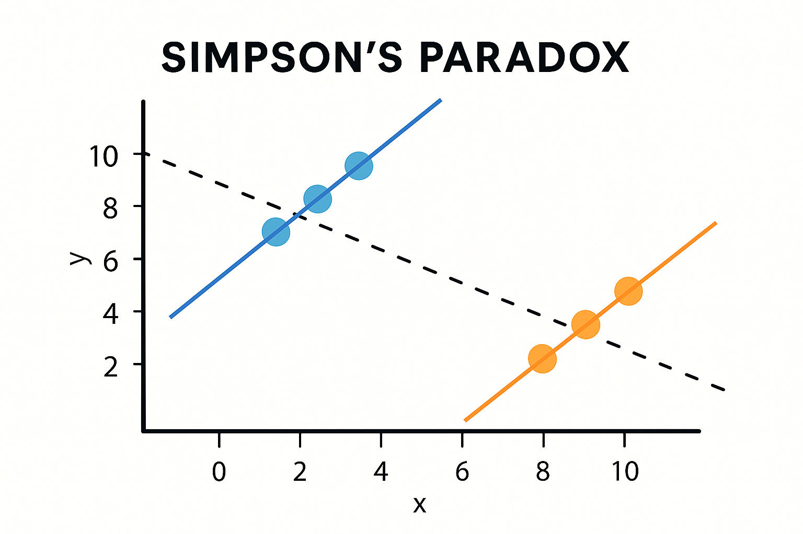

辛普森悖論（Simpson's Paradox）是一種統計現象：當我們將資料分組後發現趨勢竟然與整體資料相反。這在社會科學、醫學研究與政策評估中非常常見，若未注意，可能會導致嚴重的誤解。
本文將透過具體案例，說明此悖論的成因與避免方式，並分享在資料視覺化與建模時的實務建議。
發表日期：2025-07-18
辛普森悖論（Simpson's Paradox）是一種統計現象：當我們將資料分組後發現趨勢竟然與整體資料相反。這在社會科學、醫學研究與政策評估中非常常見，若未注意，可能會導致嚴重的誤解。
本文將透過具體案例，說明此悖論的成因與避免方式，並分享在資料視覺化與建模時的實務建議。